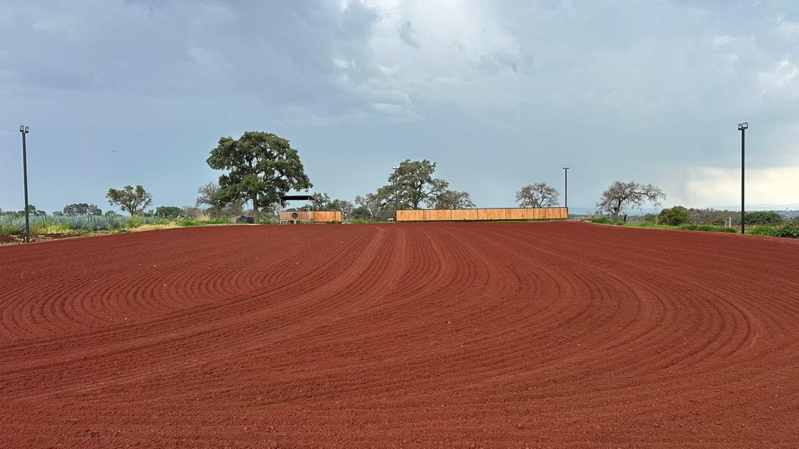
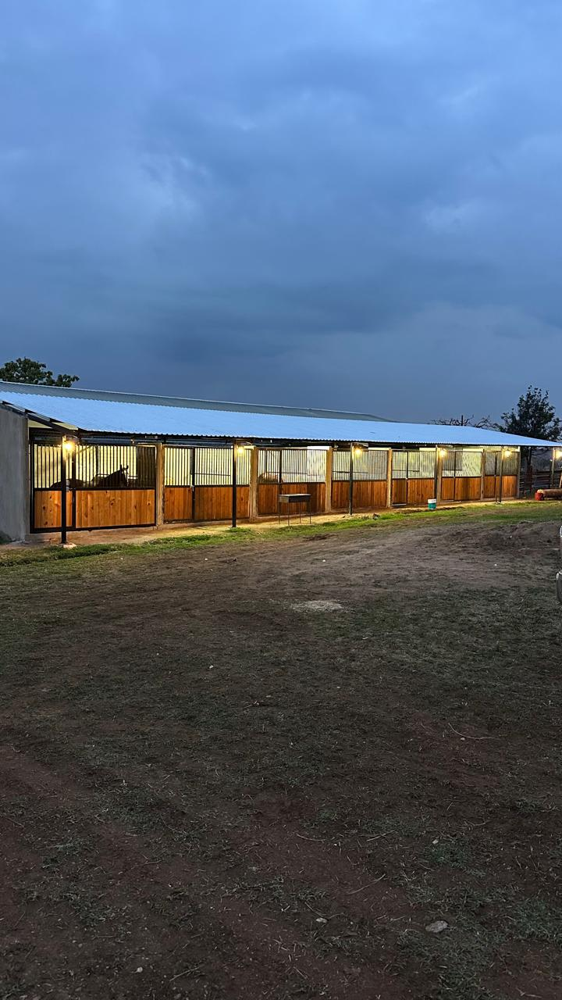
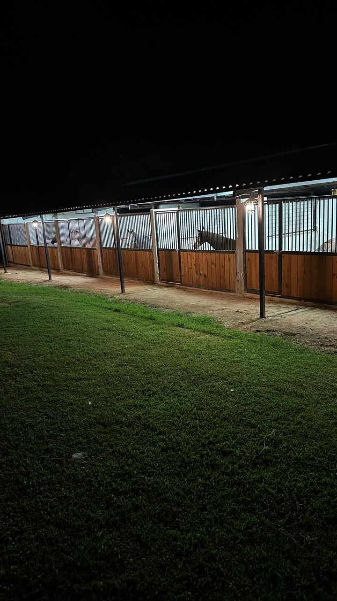

Rutina clara
Un contexto consistente reduce ruido y permite que cada sesión tenga un propósito reconocible.

El entorno importa
Un espacio de trabajo donde la rutina, la observación y la calma permiten concentrarse en lo esencial: el desarrollo de cada caballo.

Tepatitlán, Jalisco
El entorno acompaña el método: sesiones enfocadas, observación cercana y una dinámica diseñada para respetar el ritmo del caballo.
Más que infraestructura
Una instalación funcional debe ayudar al caballo a comprender, recuperarse y repetir con confianza. Por eso el trabajo diario se organiza alrededor de tres ideas.
Un contexto consistente reduce ruido y permite que cada sesión tenga un propósito reconocible.
La cercanía facilita leer cambios en disposición, movimiento y recuperación antes de avanzar.
El rendimiento se construye cuidando la condición física y la disponibilidad mental del caballo.
Dentro de AC
Momentos de trabajo, preparación y calma dentro del entorno cotidiano de AC Performance Horses.


Conoce el método
Explora las etapas que guían el desarrollo de cada caballo.